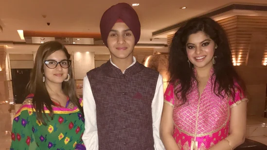

Actor Sneha Wagh, Tunisha Sharma's co-star from their TV show Sher-e-Punjab: Maharaja Ranjit Singh, has said she was a very chirpy girl.
By Ruchi Kaushal Actor Sneha Wagh, who worked with late actor Tunisha Sharma on the TV show Sher-e-Punjab: Maharaja Ranjit Singh, has said she was a very “happy-go-lucky pers
